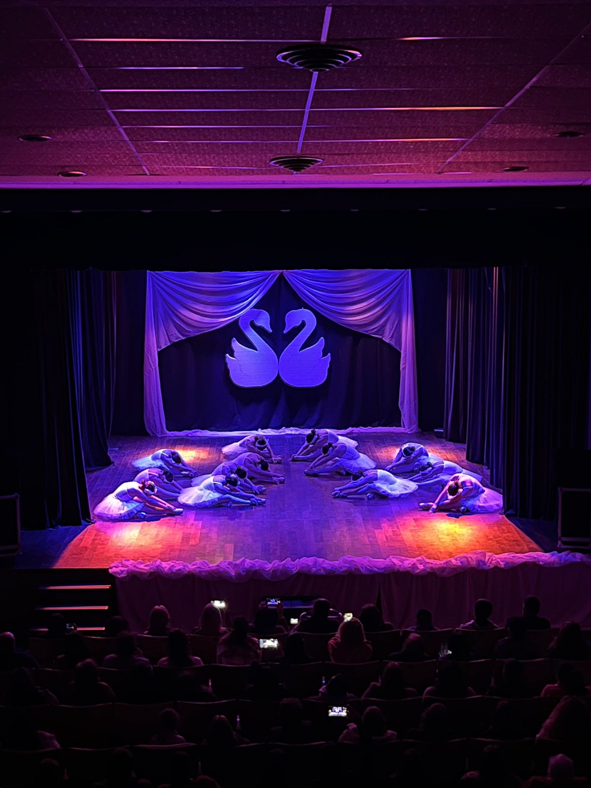
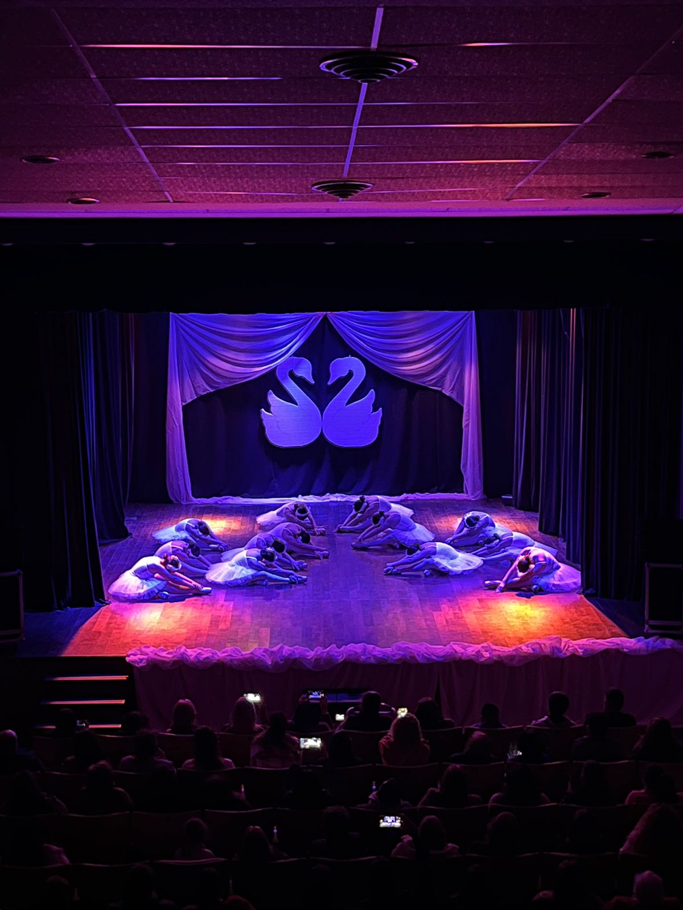

Trayectoria
La Academia de Danzas Clásica y Españolas “Odell” abrió sus puertas en el año 2014 a cargo de las profesoras Noelia, Rocío y Sol Nacul, aunque ellas tienen alumnas a cargo desde el año 2010. La Academia se encuentra inscripta en la Confederación Internacional de la Danza y examina a sus alumnas avaladas por dicha institución. Se dictan 3 clases por semana, de 2 horas cada una y abarca la enseñanza académica de la Danza Clásica y Española en niñas a partir de los 3 años. Imparte sus clases en varios turnos respondiendo a las necesidades de sus alumnas. Durante estos años las profesoras junto a sus alumnas participaron exitosamente de varios certámenes en los que la totalidad de bailes presentados obtuvieron premiación, además de premios especiales.
 

Con esto la Academia obtuvo un reconocimiento a nivel nacional, por lo que recibe numerosas invitaciones para participar en eventos en toda la provincia. Realiza muestras anuales en la que las alumnas exponen todo lo aprendido durante el año lectivo. La Academia de Danzas Odell, realiza “Concepción de Feria”, un evento que fue declarado de Interés Municipal y que busca honrar las raíces españolas de muchos habitantes de Nuestra Ciudad a imagen de la Feria de Abril de Sevilla en España. Es importante destacar que el crecimiento de la Academia se debe a la constante preparación de sus profesoras, a su pasión por el arte, como así también a la perseverancia de sus alumnas, que junto al apoyo incondicional de los padres forman el combo perfecto para amar lo que hacen.